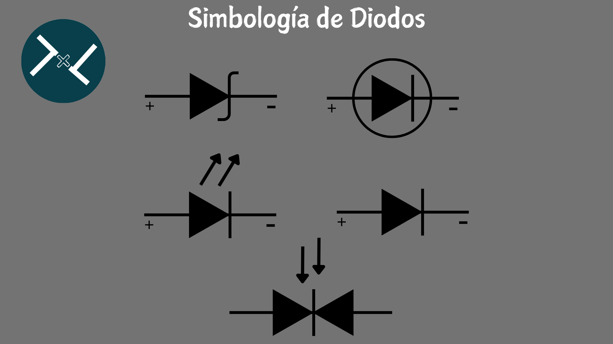

La Historia de los Diodos
La historia de los diodos es muy interesante y está llena de descubrimientos accidentales y aplicaciones ingeniosas. Según algunas fuentes, la palabra diodo viene del griego “di” que significa “dos” y “oda” que significa “camino” o "electrodo"
Los primeros diodos eran válvulas o tubos de vacío que aprovechaban el efecto termoiónico, es decir, la emisión de electrones por un metal caliente. Este efecto fue observado por Frederick Guthrie en 1873 y por Thomas Edison en 1880, pero no fue hasta 1904 que John Ambrose Fleming lo usó para crear el primer diodo práctico, llamado válvula de Fleming
Este diodo servía para demodular las señales de radio y fue empleado por la compañía Marconi. Más tarde, en 1906, Lee De Forest añadió un tercer electrodo al tubo de vacío y creó el primer triodo, que podía amplificar las señales eléctricas
Los diodos de estado sólido se basan en el uso de materiales semiconductores, como el silicio o el germanio, que tienen propiedades eléctricas intermedias entre los conductores y los aislantes. Estos materiales se pueden dopar con impurezas para crear regiones con exceso o defecto de electrones, llamadas tipo n y tipo p respectivamente. Al unir estas regiones se forma una juntura pn, que es el principio de funcionamiento de los diodos semiconductores. El primer diodo semiconductor fue creado en 1906 por Greenleaf Whittier Pickard, quien usó un cristal de silicio con un alambre fino para detectar las ondas de radio. Este tipo de diodos se llamaron detectores de cristal y fueron muy populares en las primeras radios de galena. Sin embargo, no fue hasta 1947 que John Bardeen, Walter Brattain y William Shockley inventaron el transistor, que es un dispositivo formado por dos junturas pn y que puede actuar como amplificador o interruptor. El transistor revolucionó el campo de la electrónica y permitió el desarrollo de la informática, las comunicaciones y la tecnología digita1.
¿Cuales son los dos diodos que se inventaron primero?
1.El diodo termoiónico o de vacío:fue creado por John Ambrose Fleming en 1904, basándose en el efecto Edison, que consiste en la emisión de electrones por un metal caliente. El diodo termoiónico tiene dos electrodos, un cátodo y un ánodo, dentro de un tubo de vidrio al vacío. El cátodo se calienta por una corriente eléctrica y emite electrones que son atraídos por el ánodo, que está cargado positivamente. De esta forma, el diodo permite el paso de la corriente solo en una dirección. El diodo termoiónico se usó para demodular las señales de radio y como parte de los primeros amplificadores y computadoras.
2.El diodo de cristal:
fue creado por Greenleaf Whittier Pickard en 1906, usando un cristal de silicio con un alambre fino que hacía contacto con él. El diodo de cristal aprovecha las propiedades de los materiales semiconductores, que tienen una conductividad intermedia entre los conductores y los aislantes. Al unir dos regiones de un semiconductor con diferente tipo de dopaje (n o p), se forma una juntura pn, que actúa como una barrera para el paso de la corriente inversa. El diodo de cristal se usó para detectar las ondas de radio y fue muy popular en las primeras radios de galena.Estos dos tipos de diodos fueron los precursores de los diodos modernos, que se fabrican con materiales semiconductores como el silicio o el germanio, y que tienen muchas variedades y aplicaciones.
Tipos de diodos
Existen muchos tipos de diodos, que se pueden clasificar según su material, su estructura, su función o su aplicación.
Algunos de los tipos más comunes son:
Diodo rectificador:
Es el tipo más básico de diodo, que permite el paso de la corriente solo en un sentido. Se usa para convertir la corriente alterna en corriente continua pulsante. Se fabrica con silicio o germanio y tiene una caída de voltaje directa de 0.7 V o 0.3 V respectivamente.
Diodo Zener:
Es un tipo de diodo que se polariza en inversa y mantiene un voltaje constante en sus terminales cuando se supera un cierto valor llamado voltaje Zener. Se usa para regular el voltaje o proteger los circuitos de sobretensiones.
Diodo emisor de luz (LED):
Es un tipo de diodo que emite luz cuando se polariza en directa, debido al fenómeno de electroluminiscencia. La longitud de onda y el color de la luz dependen del material semiconductor del diodo. Se usa para iluminación, señalización o visualización.
Diodo Schottky:
Es un tipo de diodo que se forma por la unión de un metal y un semiconductor, en lugar de dos semiconductores. Tiene una caída de voltaje directa muy baja (aproximadamente 0.25 V) y una velocidad de conmutación muy alta. Se usa para rectificación, detección o lógica digital.
Diodo láser:
Es un tipo de diodo que emite luz coherente y monocromática cuando se polariza en directa, debido al fenómeno de emisión estimulada. La longitud de onda y el color de la luz dependen del material semiconductor del diodo. Se usa para comunicaciones ópticas, lectura óptica o medicina. Estos son solo algunos ejemplos de los tipos de diodos que existen.
Diodo Vericap o varactor:
Diodo Vericap o varactor: tiene una capacidad variable en función de la tensión inversa aplicada, y se usa como condensador sintonizable en circuitos de alta frecuencia.
Fotodiodo:
es un diodo que genera una corriente eléctrica al recibir luz. Se usa como sensor o receptor óptico
Diodo túnel o Esaki:
tiene una unión PN muy estrecha y dopada, y aprovecha el efecto túnel para conducir en ambas direcciones. Se usa como oscilador o amplificador en circuitos de microondas.

¿Que son los Diodos?
Los diodos son dispositivos semiconductores que actúan como interruptores unidireccionales para la corriente. Permiten que la corriente fluya en una dirección, pero no en la opuesta. Los diodos también se conocen como rectificadores porque cambian corriente alterna (CA) a corriente continua (CC) pulsante. Los diodos tienen dos terminales llamados ánodo y cátodo, y tienen una polaridad determinada por un campo eléctrico incorporado. Los diodos se clasifican según su tipo, voltaje y capacidad de corriente. Los diodos tienen muchas aplicaciones en electrónica, como demodulación de señales, protección contra sobretensiones, dirección de corriente, compuertas lógicas y diodos emisores de luz (LED).
¿Para que se Usan los Diodos?
Los diodos se usan para muchas cosas en electrónica. Algunos ejemplos son:
1.Demodulación de señales: Los diodos pueden convertir las señales de radio o de audio moduladas en frecuencia o en amplitud en señales eléctricas que se pueden escuchar o procesar.
2.Protección contra sobretensiones: Los diodos pueden evitar que los circuitos se dañen por voltajes demasiado altos o inversos, como los que se producen por los rayos o las cargas inductivas.
3.Dirección de corriente: Los diodos pueden controlar el sentido del flujo de la corriente, lo que permite crear circuitos como los puentes rectificadores, los reguladores de voltaje o los convertidores de corriente.
4.Diodos emisores de luz (LED): Los diodos pueden emitir luz cuando se les aplica una corriente, lo que los hace útiles para la iluminación, la señalización o la visualización.
¿Que es la Resistencia directa?
1.La resistencia directa de un diodo es la oposición que ofrece el diodo al paso de la corriente cuando está polarizado en directa, es decir, cuando el ánodo está conectado al polo positivo y el cátodo al polo negativo. La resistencia directa depende del tipo de material semiconductor del diodo, del voltaje aplicado y de la corriente que circula por él.
La resistencia directa se puede clasificar en dos tipos: estática y dinámica.
La resistencia directa estática o de CC es la relación entre el voltaje de CC aplicado al diodo y la corriente de CC que fluye por él. Se mide en ohmios y suele ser muy pequeña, del orden de 1 a 25 ohmios para los diodos de cristal.
La resistencia directa estática se puede calcular con la siguiente fórmula:
Donde RF es la resistencia directa estática, VF es el voltaje directo y IF es la corriente directa.
1.La resistencia directa dinámica o de CA es la relación entre el cambio de voltaje en el diodo y el cambio resultante en la corriente que lo atraviesa. Se mide en ohmios y varía según la frecuencia y la amplitud de la señal alterna que se aplica al diodo.
La resistencia directa dinámica se puede calcular con la siguiente fórmula:
Donde rf es la resistencia directa dinámica, ΔVF es el cambio de voltaje directo y ΔIF es el cambio de corriente directa.
La resistencia directa de un diodo se puede medir con un multímetro digital (DMM) en modo de prueba de diodos o en modo óhmetro. La caída de tensión normal de un diodo en polarización directa es de 0.5 V a 0.8 V para los diodos de silicio y de 0.3 V para los diodos de germanio.